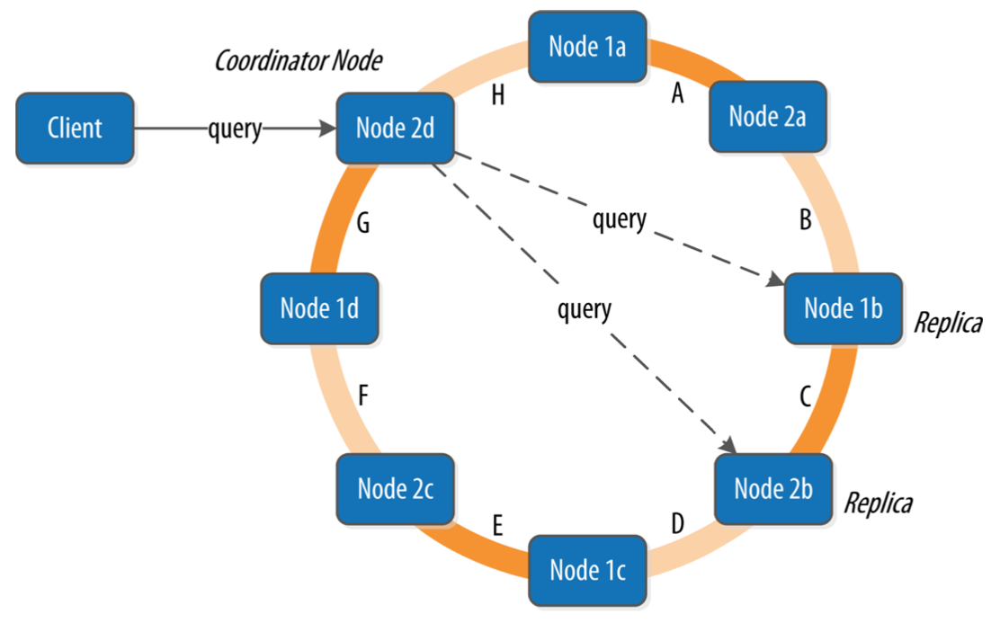
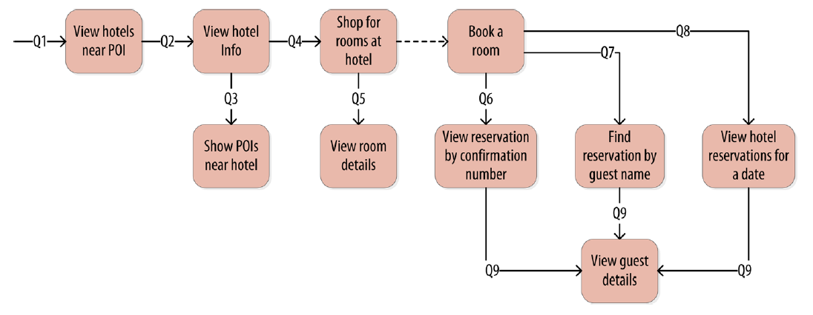
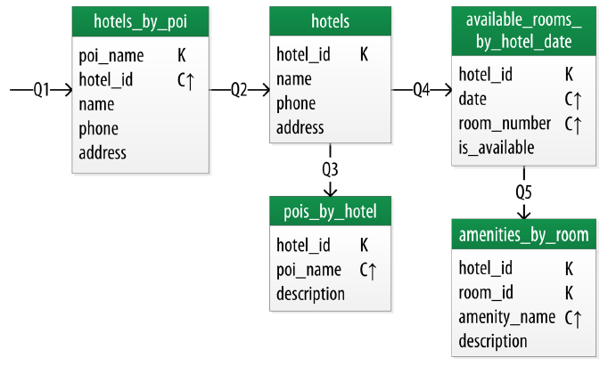
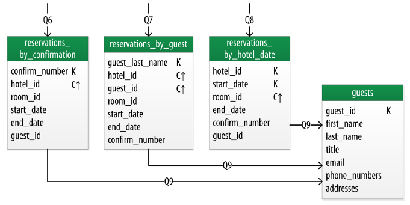

Cassandra Overview
Cassandra as an open-source NoSQL database has gained popularity in cloud and big data applications. Inspired by DynamoDB, it also has good latency, tunable consistency, easy to achieve scalability, and high-availability with cluster setup.
Our team’s been using Cassandra as the backend for an application we’ve been shipping to customers. We chose it for its high-availability setup, and good performance. We used to store time-series data and some simple configuration data as Key-value pairs. So it felt like a natural choice. And in our experience over time, it has proven to be highly capabable at serving our purposes.
With impressive availability, scalability, and read/write performance, Casandra also comes with its limitations. We cannot design data models the same way we did with traditional relational databases with SQL interface. And it doesn’t come with many of the guarantees from traditional databases, like consistency level, transactions, cascading deletion, etc. Like other NoSQL databases, Cassandra was designed to optimize batch write operations with good read and write latency. It fits applications without too much update/delete operations, especially ones with no high amounts of transactions.
So the best use cases for Cassandra can be:
- You have a high volume of data with availability concerns.
- Most data is sequential read/write or append, e.g.: logs, time-series, IoT applications, track records, messages, etc.
- You don’t have complex data relations between data entities that requires high amount of transactions.
I hope this blog could be useful if you’re starting off a new application or a module, and evaluting databases of choice. It starts with an overview of Cassandra, its architecture, then how to evaluate Cassandra for your project, and how to design your data models with examples. It will give you a better picture of whether and how Cassandra can fit in your project. So that you can start thinking about your application and data modeling from a high-level. And then, you can go on to learn more about this database’s details from other references provided in this blog or other resources.
With the prevalence of Machine Learning and Big Data applications, I strongly believe Cassandra can play an important role and it’s definitely worth learning about its ideas.
As an alternative, ScyllaDB could be a very neat open-source replacement for Cassandra, with compatible CQL and driver interface. See more at: https://www.scylladb.com/ Its blog also provides with some use case studies.
References
- Cassandra Overview: https://docs.datastax.com/en/cassandra-oss/3.x/cassandra/cassandraAbout.html
- Cassandra Use Cases from DataStax: https://www.datastax.com/blog/what-earth-are-people-using-cassandra-anyway
- Cassandra: Principle and Applications http://disi.unitn.it/~montreso/ds/papers/Cassandra.pdf
- ScyllaDB https://www.scylladb.com/
- ScyllaDB User Stories https://www.scylladb.com/category/user-stories/
- How Discord Stores Billions of Messages https://blog.discord.com/how-discord-stores-billions-of-messages-7fa6ec7ee4c7
Cassandra Architecture For the Impatient
Cassandra has some interesting architectural design ideas to achieve its availability as well as performance. The tradeoff is its own limitations.
A Cassandra cluster consists of one or many decentralized nodes with that shares the client query load for scalability as well as replication for high-availability. Cassandra cluster has no master node, it maintains its membership information with the Gossip Protocol.
Cassandra cluster partitions its data among nodes as a token ring. All data in Cassandra is partitioned to its nodes in the ring based on the key hash and replication configurations.

Node membership and sharing is decided by the Consistent Hashing algorithm for load-balancing and minimal data movement during membership changes. For each table, the partition key decides which replicas it writes to. Therefore it’s important to keep in mind to include the partition key in the design of your schema (as discussed below).
Client queries can go to multiple nodes in the cluster based on your replication and query configuration. This is Cassandra’s “Tunable Consistency”: higher number of nodes for each query would sacrifice response time and availability, but maintains higher consistency. And vice versa. (See more at CAP theorem.) Tunable Consistency allows users to decide what consistent level is for data read/write. For Eventual Consistency, Cassandra responds with confirmation after writing to any one of the replicated nodes for low latency and high availability. While for Quorum Consistency, Cassandra reads/writes from a quorum of the replicated nodes, and takes the latest write as the final result (LWW Last Write Wins strategy). You can choose the consistency level based on your application needs.
Same as BigTable and DynamoDB design, Cassandra uses MemTable as in memory storage, and SSTable (Sorted Strings Table) as storage backend. MemTables are periodically flushed to disk as SSTables, which are immutable, sorted by key, and gives impressive batch read/write performance. But updating/deletion in SSTable uses new records and tombstones. It appends the new records to new SSTables instead of overwriting the existing ones. So huge amounts of update/delete operations will be inefficient in Cassandra.
So Cassandra’s architecture decides that:
- You should decide the partition key in your data schema design.
- You should decide the replication, consistency level, and availability of your tables and queries.
- Cassandra works very well with sequential batch read/writes, but not so much with high amount of modifications and deletions.
For more information, I found the book “Cassandra: The Definitive Guide” a very helpful reference.
Update: though it’s a blog about ScyllaDB, it’s closely modeled after Cassandra and DynamoDB: https://docs.scylladb.com/architecture/. And I’ve found it a very helpful source as well.
References
- Cassandra Paper: http://www.cs.cornell.edu/projects/ladis2009/papers/lakshman-ladis2009.pdf
- Cassandra and CAP theorem https://www.ibm.com/cloud/learn/cap-theorem
- Consistent Hashing https://en.wikipedia.org/wiki/Consistent_hashing
- Cassandra: The Definitive Guide https://www.oreilly.com/library/view/cassandra-the-definitive/9781098115159/
- ScyllaDB Architecture: https://docs.scylladb.com/architecture/
Data Modeling
To start off building applications with Cassandra, first thing to come to mind is your data schema, and whether they can fit nicely into the Cassandra paradigm.
Beyond RDBMS
In the book “Cassandra: The Definitive Guide”, I found a paragraph that best summarizes schema design with NoSQL databases:
By contrast, in Cassandra you don’t start with the data model; you start with the query model. Instead of modeling the data first and then writing queries, with Cassandra you model the queries and let the data be organized around them. Think of the most common query paths your application will use, and then create the tables that you need to support them.
Users need to keep in mind not to design its application schema as Entity-Relation model with traditional SQL databases, but start by thinking of all the queries you’ll need from the database.
Data Modeling: Time-Series Example
For example, from ScyllaDB blog, here’s an example of a typical Cassandra time-series table schema design.
Cassandra requires a composite primary key for each table: one as row key (or partition key) used to locate the row data for writing as well as reading; another as sorting key (or clustering key).
1 | -- Example from https://www.scylladb.com/2020/02/20/nauto-achieving-consistency-in-an-eventually-consistent-environment/ |
The Primary Key is used to identify and locate the rows in the Cassandra cluster, and it’s of two parts: the partition key and the clustering key.
The first part (version, id, bucket) as partition key, is used to locate the right partition in the cluster and the nodes where the data resides. It is required for writing, and efficient reading as well.
The second part end_ms, start_ms as clustering key is for sorting rows. Choosing the right clustering key gives you better performance for batch reading.
Data Modeling: Hotel Service Example
The Cassandra book includes an example of designing data schema with Cassandra.
https://www.oreilly.com/library/view/cassandra-the-definitive/9781449399764/ch04.html
Think of a hotel booking application, where you’ll need to look up what hotels are in the city, what hotels are close to site-seeing locations, book reservations, look up detailed amenities for hotel rooms, and so on.
So A query-first approach to schema design is, start by thinking about all the queries you’ll make to the backend service:
- Find the hotels by city name.
- Find the hotels by Point of Interest locations (site-seeing, tourism points).
- Find the rooms in the hotels.
- Find the amenities of given rooms in the hotel.
- Find the Point of Interest locations around the hotels.
And for reservations, you’ll probably need to find the right reservation by different types of query info, for example:
- Find the reservation of certain dates for a room.
- Find the reservation by confirmation ID.
- Find the reservation by guest.
If you link all your queries based on the keys and results of each query, you’ll end up with a diagram of all the supported queries from the client workflow. And based on this diagram, we can come up with the tables necessary for our application, along with the best keys for partition and sorting.

All the queries will form a workflow diagram linking all the tables together. This could be represented as “Chebotko Diagram” for schema design. A Chebotko Diagram is a way to visualize the relationships between table and queries, including the table key and field design in the schema. With this schema, it’s much clearer how to finally implement your tables and the application workflow.
A part of the final diagram would look like this, an example from the book.

For the reservation procedure. The denormalized schema design will be based on queries, and might be replicated across different tables, contrary to the E-R model for SQL schemas:

Data Modeling: Pet Service Exercise
Here’s also a fun exercise you can do with the example in Scylla’s User Stories section. Imagine a Pet Care service where each user tags their pets with remote monitor sensors (e.g. for heart rate, Geolocation, and other metrics). And you’ll need to design an application to log and query the metrics for each pet.
https://www.scylladb.com/2020/09/09/carepet-an-example-iot-use-case-for-hands-on-app-developers/
So you’re working for a service for pet health monitoring. You’ll need to design the backend service that saves and queries pet’s health metrics over time for all customers and their pets. Each pet monitor gathers data and saves in the backend database, which is Cassandra in this case. And you’ll need to design the schema to fit in the Cassandra model.
From the database, you’ll need provide following queries:
- Query by owner ID, returns owner’s account info.
- Query by owner ID, returns owner’s pets information.
- Query by pet ID, returns the sensors info.
- Query by sensor ID, returns the time-series data from the sensor.
Try design the tables and see if your solution is close to the example’s.
https://github.com/scylladb/care-pet/blob/master/docs/design_and_data_model.md
References
- On Chetbotko Diagram: https://www.researchgate.net/publication/308856170_A_Big_Data_Modeling_Methodology_for_Apache_Cassandra
- Scylla Example: https://www.scylladb.com/2020/09/09/carepet-an-example-iot-use-case-for-hands-on-app-developers/
- My Previous Notes on NoSQL Data Modeling: https://blog.kevinhu.me/2020/07/03/03-Cassandra-Data-Modeling/
- Detailed Guide From DataStax: https://www.datastax.com/sites/default/files/content/whitepaper/files/2019-10/CM2019236 - Data Modeling in Apache Cassandra ™ White Paper-4.pdf
Summary
To summarize, Cassandra’s architectural design decides that:
- Cassandra has some special use cases. Understand when you should choose Cassandra and when you should not.
- Data Modeling: design with query-oriented，denormalized schema. Start with the query diagram in your applications, and not E-R models.
- Data Modeling: pick a composite key with partition key and clustering key in mind.
- Transactions in Cassandra is possible, but is painful and with lots of limitations. Try to avoid them.
- Just like any other databases, there are several maintenance burdens to keep in mind for best correctness and performance. Better understanding of the inner workings grants you better stability, performance, and less unpleasant surprises.
It’s a powerful tool with its limitations. When used in the right scenarios, it can be a formidable weapon in your arsenal.
If you feel like Cassandra can be a good fit for your application, you can then go on to learn more about:
- Its architecture design:
- SSTable.
- Snitch.
- Merkel Tree Anti-entropy Process.
- …
- Advanced queries and use cases:
- Batch updates.
- Lightweight Paxos procedure.
- Materialized views.
- Deployment, maintainance, and other operations around Cassandra.
- CQL, language drivers, and actual appliaction implementation.